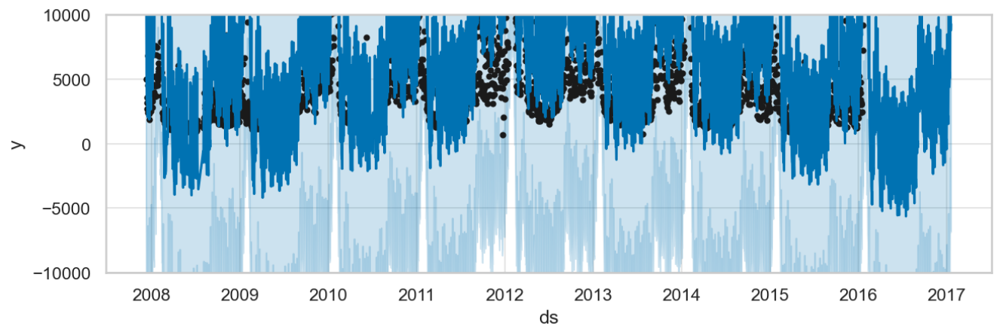

Migrate from Prophet#
Gloria was inspired by Prophet, yet it is an independent framework with substantial improvements in modeling flexibility. Gloria honors its heritage by retaining much of Prophet’s interface, parameters, workflow, and even internal mechanisms. This tutorial is intended for Prophet users who wish to explore Gloria. It highlights the key similarities and differences between the two libraries and points out common pitfalls along the way.
Note
The migration guide borrows most examples from the Prophet documentation and modifies them to work with Gloria in the same fashion.
Basic Workflow#
Prophet’s go-to example is the self-scraped Peyton Manning data set. Using these data, Prophet presents its workflow as
# Prophet
import pandas as pd
from prophet import Prophet
df = pd.read_csv(
"https://raw.githubusercontent.com/facebook/prophet/main/examples/example_wp_log_peyton_manning.csv"
)
m = Prophet()
m.fit(df)
future = m.make_future_dataframe(periods=365)
forecast = m.predict(future)
m.plot(forecast)
Following Gloria’s Basic Usage tutorial, the same example can be expressed as:
# Gloria
import pandas as pd
from gloria import Gloria
df = pd.read_csv(
"https://raw.githubusercontent.com/facebook/prophet/main/examples/example_wp_log_peyton_manning.csv"
)
# Convert to timestamps
df["ds"] = pd.to_datetime(df["ds"])
m = Gloria()
# Add observed seasonalities
m.add_seasonality(name="weekly", period="7 d", fourier_order=3)
m.add_seasonality(name="yearly", period="365.25 d", fourier_order=10)
m.fit(df)
future = m.make_future_dataframe(periods=365)
forecast = m.predict(future)
m.plot(forecast)
There are three key differences to note, each stemming from Gloria’s guiding principle: to provide greater flexibility by imposing fewer assumptions about the data and model structure, while transferring more ownership and responsibility to the user:
The datetime column
df["ds"]must be explicitly converted to apandas.Seriesof datetimes.Gloria models are initialized without predefined features. All seasonalities, including weekly and yearly, need to be added manually using
Gloria.add_seasonality().Prophet’s
add_seasonality()method expects theperiodargument as a numeric value, silently assuming days as unit, whereas Gloria accepts timedelta-like strings as parsed bypandas.Timedelta, making the intended period more explicit.
Events#
Prophet allows you to add custom events to your model by providing an additional data frame to the constructor. Each row of this data frame represents a single event instance, where the columns holiday and ds specify the event name and timestamp, respectively. Two optional columns lower_window and upper_window define how many days before and after the event its impact extends. The resulting data frame is then passed to the holidays argument of the Prophet constructor:
# Prophet
superbowls = pd.DataFrame({
"holiday": "superbowl",
"ds": pd.to_datetime(["2010-02-07", "2014-02-02", "2016-02-07"]),
"lower_window": 0,
"upper_window": 1,
})
m = Prophet(holidays=superbowls)
Gloria uses Events for the same purpose. Events are added to the model via the add_event() method:
# Gloria
from gloria import BoxCar
superbowls = pd.to_datetime(["2010-02-07", "2014-02-02", "2016-02-07"])
m = Gloria()
m.add_event(
name="superbowl",
regressor_type="IntermittentEvent",
profile=BoxCar(width="1d"),
t_list=superbowls
)
An event in Gloria consists of a temporal profile and one or more anchor times at which the profile is applied. In our example, the anchor times are the list of superbowl dates. The chosen regressor_type IntermittentEvent is designed for such lists of discrete occurrences. The 1-day-width BoxCar function used as the event profile is equivalent to Prophet’s event effect, which applies only on the day of the event. Further explanations about the different event and profile types can be found in the Events tutorial.
Gloria’s events do not directly support lower_window and upper_window. In Prophet, each day within the event window receives its own regressor parameter. To reproduce this behavior in Gloria, you would need to add one event per day, for instance:
# Gloria
m.add_event(
name="superbowl_+1",
regressor_type="IntermittentEvent",
profile=BoxCar(width="1d"),
t_list=superbowls + pd.Timedelta("1d")
)
Alternatively, if a single regressor parameter for all days in the window is sufficient, you can achieve the same effect by shifting and widening the event profile to cover the desired duration.
Tip
The impact of many events peaks on a specific day and decays with increasing distance from it. Profiles such as Exponential or Gaussian are natural choices for these cases and eliminate the need to add multiple event instances. More specifically, the parameters lead_width and lag_width of the Exponential profile follow a similar idea like lower and upper windows in Prophet without introducing an excessive amount of fit parameters.
Country Holidays#
An important group of events are country-specific holidays. Prophet provides the convenience method add_country_holidays() to add all holidays for a given country at once:
# Prophet
m = Prophet()
m.add_country_holidays(country_name='US')
To retrieve holidays for a specific subdivision, it is possible to use the make_holiday_df helper function and construct a holidays data frame manually:
# Prophet
from prophet import Prophet
from prophet.make_holidays import make_holidays_df
nsw_holidays = make_holidays_df(
year_list=[2019 + i for i in range(10)], country='AU', province='NSW'
)
m_nsw = Prophet(holidays=nsw_holidays)
In Gloria, you can use the Holiday regressor to add a single country holiday via the add_event() method. Its name argument must match the desired holiday. To explore which holidays are available for a given country, use the get_holidays() function and inspect its all_holiday_names output. Note that provinces can be directly passed as argument and no manual construction of a holiday data frame is necessary:
# Gloria
from gloria import BoxCar
m.add_event(
name="Australia Day",
regressor_type="Holiday",
profile=BoxCar(width="1d"),
country="AU",
subdiv="NSW"
)
Adding all available country holidays at once is also supported in Gloria and will be explained in the following Protocols section.
Protocols#
Even though Gloria does not assume calendric data as its default input, it acknowledges their relevance by introducing the CalendricData protocol along with the add_protocol() method. From a general perspective, protocols bundle seasonalities and events that are common for a certain group of problems. The CalendricData protocol in particular, adds the seasonalities daily, weekly, monthly, quarterly, and yearly to a Gloria model. Additionally, country- and subdivision-specific holidays will be added, if their names are provided. The following Prophet-code
# Prophet
m = Prophet(yearly_seasonality=False)
m.add_seasonality(name="quarterly", period=365.25 / 4, fourier_order=2)
m.add_country_holidays(country_name='US')
is equivalent to
# Gloria
from gloria import Gloria, CalendricData
m = Gloria()
# Create the protocol
calendric_protocol = CalendricData(
yearly_seasonality=False,
quarterly_seasonality=2,
country="US"
)
# Add the protocol
m.add_protocol(calendric_protocol)
Tip
Further information on both country holidays and protocols can be found in the Calendric Data tutorial.
Model Selection#
All Prophet models assume normally distributed errors. Gloria, on the other hand, lets you choose from several distribution types, depending on the nature of your data. A common example involves count values, which are non-negative integers. In fact, the Peyton Manning dataset consists of count values in disguise, as they are simply log-transformed daily page-visits. The snippet below reverses this transformation and refits the model using Prophet:
# Prophet
import pandas as pd
import numpy as np
from prophet import Prophet
df = pd.read_csv(
"https://raw.githubusercontent.com/facebook/prophet/main/examples/example_wp_log_peyton_manning.csv"
)
df["y"] = np.exp(df["y"])
m = Prophet()
m.fit(df)
future = m.make_future_dataframe(periods=365)
forecast = m.predict(future)
m.plot(forecast)
{kind=link}
In the result plot above you can see that Prophet struggles to capture the pattern (as well as Gloria for that matter), mainly because most page-visit counts cluster around 3,000 per day, while a few surge to values up to two orders of magnitude higher, which justifies the log transformation.
However, we like to focus on a different issue: negative page-visits do not make sense. And yet, Prophet’s normal distribution allows them, which you will immediatly recognize zooming into the low-count region of the plot, as shown below: both prediction and confidence intervals drop below zero.
{kind=link}
To treat count data properly, Gloria offers the models binomial, beta-binomial, poisson, and negative binomial, of which the latter is the generalist, as it does not have an upper bound and offers a flexible variance. Using Gloria, our code becomes:
# Gloria
import pandas as pd
import numpy as np
from gloria import Gloria, cast_series_to_kind
df = pd.read_csv(
"https://raw.githubusercontent.com/facebook/prophet/main/examples/example_wp_log_peyton_manning.csv"
)
# Convert to timestamps
df["ds"] = pd.to_datetime(df["ds"])
df["y"] = cast_series_to_kind(np.exp(df["y"]), "u")
m = Gloria(model="negative binomial")
# Add observed seasonalities
m.add_seasonality(name="weekly", period="7 d", fourier_order=3)
m.add_seasonality(name="yearly", period="365.25 d", fourier_order=10)
m.fit(df)
future = m.make_future_dataframe(periods=365)
forecast = m.predict(future)
m.plot(forecast)
Two things are to be highlighted here:
The desired model is passed as parameter into the Gloria constructor. A full list of available models can be found in the Model Selection guide.
Gloria strictly respects the data-type of the underlying model. Consequently, input count data must be unsigned integers. Gloria provides the helper function
cast_series_to_kind()to perform the conversion.
Zooming into the plot, we see that the Gloria results now adhere to the lower bound of zero.

Note
Besides allowing negative predictions, a normally distributed model also produces floats instead of integers, which is not visible in the plots, but an issue nonetheless. In contrast, Gloria’s count models output only integers.
Multiplicative Seasonality#
Prophet lets you choose between additive and multiplicative decomposition. In the additive model, trend and seasonal components simply sum up, whereas in the multiplicative model the seasonal amplitude scales with the trend. Prophet’s documentation illustrates this using the classic air-passenger dataset:
# Prophet
from prophet import Prophet
import pandas as pd
import matplotlib.pyplot as plt
from prophet.plot import add_changepoints_to_plot
df = pd.read_csv('https://raw.githubusercontent.com/facebook/prophet/main/examples/example_air_passengers.csv')
m = Prophet(seasonality_mode='multiplicative', n_changepoints=25)
m.fit(df)
future = m.make_future_dataframe(0, freq='MS')
forecast = m.predict(future)
_, ax = plt.subplots(figsize=(10,6), dpi=150)
fig = m.plot(forecast, ax=ax)
add_changepoints_to_plot(fig.gca(), m, forecast)
Gloria intentionally does not to offer an explicit switch between the two decomposition types. Instead, these behaviors emerge naturally from the choice of likelihood model. The tutorial on Decompostion Types discusses this in detail, but in short:
Use the normal model for additive decomposition.
Use poisson, negative binomial, or gamma for multiplicative decomposition.
The remaining binomial, beta, and beta-binomial models behave somewhere in between: their seasonality becomes multiplicative near the distribution’s boundaries and approximately additive in the mid-range.
The following code block demonstrates how to obtain a multiplicative fit for the air-passenger dataset using Gloria’s Poisson model with the result plot shown below. Note:
Although not immediately obvious in the figure, the variance increases with the mean as expected for a truly multiplicative process. This behaviour is absent in Prophet because it relies on a normal likelihood.
As a side effect of the Poisson model, the trend exhibits exponential growth even though changepoints were completely disabled. We will explore this phenomenon in the next section.
# Gloria
import pandas as pd
from gloria import Gloria, cast_series_to_kind
# Read the data
url = "https://raw.githubusercontent.com/e-dyn/gloria/main/scripts/data/real/AirPassengers.csv"
data = pd.read_csv(url)
# Rename columns for convenience
data.rename(
{"Month": "date", "#Passengers": "passengers"}, axis=1, inplace=True
)
# Convert to datetime
data["date"] = pd.to_datetime(data["date"])
# Make a new monthly column with equidistant spacing
freq = pd.Timedelta(f"{365.25/12}d")
data["date"] = pd.Series(
pd.date_range(
start=data["date"].min(), periods=len(data["date"]), freq=freq
)
)
# Cast to unsigned data type so it is digestible by count models
data["passengers"] = cast_series_to_kind(data["passengers"], "u")
# Set up the model
m = Gloria(
model="poisson",
metric_name="passengers",
timestamp_name="date",
sampling_period=freq,
n_changepoints=0,
)
# Add observed seasonalities
m.add_seasonality("yearly", "365.25 d", 4)
# Fit the model to the data
m.fit(data)
# Plot
m.plot(m.predict(), include_legend=True)
{kind=link}
Saturation Growth#
Prophet provides not only piecewise-linear trends but also a logistic trend model, which produces saturating growth, that is a trend which approaches a maximum capacity over time. The example below illustrates how to use Prophet’s logistic trend:
Add a
capcolumn to both the training and prediction DataFrames to specify the saturating capacity of the system.When creating the model, set
growth="logistic".
# Prophet
import pandas as pd
from prophet import Prophet
df = pd.read_csv(
"https://raw.githubusercontent.com/facebook/prophet/refs/heads/main/examples/example_wp_log_R.csv"
)
df["cap"] = 8.5
m = Prophet(growth="logistic")
m.fit(df)
future = m.make_future_dataframe(periods=1826)
future["cap"] = 8.5
fcst = m.predict(future)
fig = m.plot(fcst)
{kind=link}
In the resulting forecast, the trend smoothly approaches the specified capacity of 8.5. Note, however, that the capacity applies only to the trend component: seasonal effects are still allowed to exceed the upper limit.
In Gloria, saturation arises naturally in all models with explicit lower or upper bounds, so no special logistic trend mode is required. The example below uses the beta distribution model, which supports bounded real-valued data.
Note
The beta distribution currently requires data to lie within the fixed interval [0, 1]. The example therefore normalizes the observations before fitting. A future Gloria release will allow all bounded models to specify custom lower and upper limits directly (see issue #61).
# Gloria
import pandas as pd
from gloria import Gloria
df = pd.read_csv(
"https://raw.githubusercontent.com/facebook/prophet/refs/heads/main/examples/example_wp_log_R.csv"
)
capacity = 8.5
df = df.loc[df["y"] < capacity]
df["y"] /= capacity
df["ds"] = pd.to_datetime(df["ds"])
df.sort_values("ds", inplace=True)
m = Gloria(model="beta", n_changepoints=5)
m.add_seasonality(name="weekly", period="7 d", fourier_order=3)
m.add_seasonality(name="yearly", period="365.25 d", fourier_order=10)
m.fit(df)
future = m.make_future_dataframe(periods=1826)
fcst = m.predict(future)
fig = m.plot(fcst)

As shown above, Gloria produces the same kind of nonlinear saturating trend. In addition, both seasonal amplitudes and confidence intervals shrink as the forecast approaches the upper bound, ensuring that predictions remain within the valid range at all times.
For more details on saturating behaviour in Gloria, see the Saturation tutorial.
Data Variability#
Prophet’s predict method produces a data frame including yhat_upper and yhat_lower columns besides yhat. These upper and lower bounds add an interval of observed noise on top of yhat, corresponding to the variance learned from the data during the fit.
Gloria calls these data variability columns observed_upper and observed_lower. In contrast, the columns yhat_upper and yhat_lower are used to describe confidence intervals of the model itself. That is, the model expects the true \(\hat{y}\) to be within these bounds with a confidence level given by the Gloria argument interval_width.
The difference between confidence intervals and data variability are further discussed as part of the Predictions tutorial.
Tip
Use the data variability intervals (observed_upper / observed_lower) when comparing the model to the observed data. For example, to visually check whether the model error is consistent with the noise in the data.
Use the model uncertainty intervals (yhat_upper / yhat_lower) when evaluating the model`s forecast uncertainty. For example, when asking how sure the model is about future values or counterfactual scenarios.